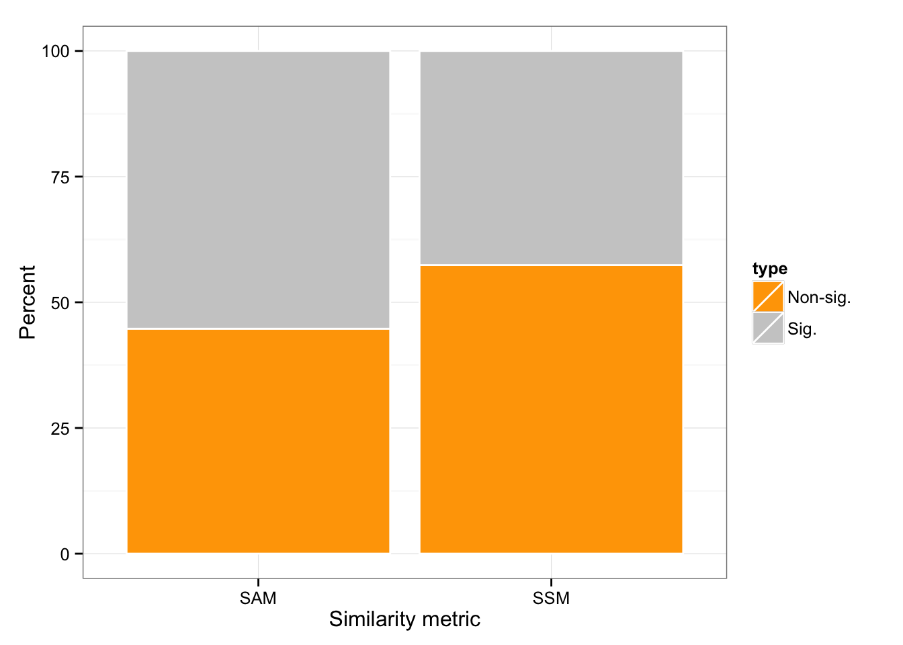

Per gene statistical comparison of CVs
Joyce Hsiao
2015-11-12
Last updated: 2015-12-11
Code version: 7a25b2aef5c8329d4b5394cce595bbfc2b5b0c3e
Objective
Quantify statistical significance of individual differences between adjusted CVs. Here we focus on bootstrapped CIs of individual CVs.
For cells within each individual cell line, we constructed 1000 samples with replacment and then computed 95% confidence interval. This method resulted in narrow confidence interval.
Since sample size is a major factor in the width of confidence interval, instead of the entire set of cells for each individual, we sample a subset of the cells with replacement; the number of the sample is set to be 90, close to the number of wells on each C1 plate.
Set up
library("data.table")
library("dplyr")
library("limma")
library("edgeR")
library("ggplot2")
library("grid")
library("Humanzee")
theme_set(theme_bw(base_size = 12))
source("functions.R")Prepare data
Input quality single cells
quality_single_cells <- read.table("../data/quality-single-cells.txt",
header = FALSE,
stringsAsFactors = FALSE)
str(quality_single_cells)'data.frame': 568 obs. of 1 variable:
$ V1: chr "NA19098.r1.A01" "NA19098.r1.A02" "NA19098.r1.A04" "NA19098.r1.A05" ...Input annotation of only QC-filtered single cells. Remove NA19098.r2
anno_filter <- read.table("../data/annotation-filter.txt",
header = TRUE,
stringsAsFactors = FALSE)
dim(anno_filter)[1] 568 5Import endogeneous gene molecule counts that are QC-filtered, CPM-normalized, ERCC-normalized, and also processed to remove unwanted variation from batch effet. ERCC genes are removed from this file.
molecules_ENSG <- read.table("../data/molecules-final.txt",
header = TRUE, stringsAsFactors = FALSE)
stopifnot(NCOL(molecules_ENSG) == NROW(anno_filter))Import gene symbols
gene_info <- read.table("../data/gene-info.txt", sep = "\t",
header = TRUE, stringsAsFactors = FALSE)
str(gene_info)'data.frame': 6152 obs. of 5 variables:
$ ensembl_gene_id : chr "ENSG00000000003" "ENSG00000000005" "ENSG00000000419" "ENSG00000000457" ...
$ chromosome_name : chr "X" "X" "20" "1" ...
$ external_gene_name: chr "TSPAN6" "TNMD" "DPM1" "SCYL3" ...
$ transcript_count : int 3 2 7 5 10 4 12 2 13 8 ...
$ description : chr "tetraspanin 6 [Source:HGNC Symbol;Acc:11858]" "tenomodulin [Source:HGNC Symbol;Acc:17757]" "dolichyl-phosphate mannosyltransferase polypeptide 1, catalytic subunit [Source:HGNC Symbol;Acc:3005]" "SCY1-like 3 (S. cerevisiae) [Source:HGNC Symbol;Acc:19285]" ...Compute normalized CV
We compute squared CV across cells for each individual and then for each individual CV profile, account for mean dependency by computing distance with respect to the data-wide coefficient variation on the log10 scale.
ENSG_cv <- Humanzee::compute_cv(log2counts = molecules_ENSG,
grouping_vector = anno_filter$individual)
ENSG_cv_adj <- Humanzee::normalize_cv(group_cv = ENSG_cv,
log2counts = molecules_ENSG,
anno = anno_filter)Compute summary measure of deviation
- Standardize the each CV vectors
Individual CV vectors are standarized for individual CV mean and coefficients of variation across genes.
df_cv <- data.frame(NA19098 = ENSG_cv_adj[[1]]$log10cv2_adj,
NA19101 = ENSG_cv_adj[[2]]$log10cv2_adj,
NA19239 = ENSG_cv_adj[[3]]$log10cv2_adj)
library(matrixStats)
df_norm <- sweep(df_cv, MARGIN = 2, STATS = colMeans(as.matrix(df_cv)), FUN = "-")
df_norm <- sweep(df_norm, MARGIN = 2, STATS = sqrt(colVars(as.matrix(df_cv))), FUN = "/")
colnames(df_norm) <- names(ENSG_cv_adj)- SSM and SAM
Compute metrics for quantifying similarity between the three individual coefficients of variation.
library(matrixStats)
df_norm <- as.data.frame(df_norm)
df_norm$squared_dev <- rowSums( ( df_norm - rowMedians(as.matrix(df_norm)) )^2 )
df_norm$abs_dev <- rowSums(abs( df_norm - rowMedians(as.matrix(df_norm)) ))Bootstrapped CIs
Sample size is the orignal sample size
load("rda/cv-adjusted-statistical-test-bootstrap/bootstrap-ci.rda")
rownames(abs_dev_pnt) <- rownames(molecules_ENSG)
rownames(squared_dev_pnt) <- rownames(molecules_ENSG)
head(cbind(squared_dev_pnt, df_norm$squared_dev)) 25% 97.5%
ENSG00000237683 0.4301777 5.343718 0.02747056
ENSG00000188976 0.4824864 4.999148 0.14337580
ENSG00000187608 3.3836449 10.265239 2.51312909
ENSG00000188157 0.2737914 3.458007 0.49346477
ENSG00000078808 0.2217499 2.585129 0.75898223
ENSG00000176022 0.4122886 7.099454 0.10725585head(cbind(abs_dev_pnt, df_norm$abs_dev)) 25% 97.5%
ENSG00000237683 0.8048241 2.826562 0.6859387
ENSG00000188976 0.8860306 2.749277 1.1479143
ENSG00000187608 2.4104778 4.375608 4.5782764
ENSG00000188157 0.6458733 2.250246 3.6291050
ENSG00000078808 0.5955066 1.991099 3.2945706
ENSG00000176022 0.8035054 3.271384 0.9898609Genes with SSM outside of the 95% boostrapped CI are consistented to be statistical significant.
sig_gene_CI_squared_dev <- df_norm$squared_dev > squared_dev_pnt[, 2] | df_norm$squared_dev < squared_dev_pnt[, 1]
sig_gene_CI_abs_dev <- df_norm$abs_dev > abs_dev_pnt[, 2] | df_norm$abs_dev < abs_dev_pnt[, 1]library(broman)
crayon <- brocolors("crayon")
ggplot(data.frame(index = c(mean(sig_gene_CI_squared_dev == 0),
mean(sig_gene_CI_squared_dev == 1),
mean(sig_gene_CI_abs_dev == 0 ),
mean(sig_gene_CI_abs_dev == 1) ),
type = factor( rep(c(0,1), times = 2),
labels = c("Non-sig.", "Sig.") ),
metric = rep( c("SSM", "SAM"), each = 2) ),
aes(x = metric, y = 100*index, fill = type) ) +
geom_bar(stat = "identity", colour = "white") +
scale_fill_manual(values = c("orange", "grey80")) +
ylab("Percent") + xlab("Similarity metric") 
Correspondance of SSM and SAM results.
library(gplots)
venn(list(SSM = rownames(molecules_ENSG)[which(sig_gene_CI_squared_dev)],
SAM = rownames(molecules_ENSG)[which(sig_gene_CI_abs_dev)] ))
Session information
sessionInfo()R version 3.2.1 (2015-06-18)
Platform: x86_64-apple-darwin13.4.0 (64-bit)
Running under: OS X 10.10.5 (Yosemite)
locale:
[1] en_US.UTF-8/en_US.UTF-8/en_US.UTF-8/C/en_US.UTF-8/en_US.UTF-8
attached base packages:
[1] grid stats graphics grDevices utils datasets methods
[8] base
other attached packages:
[1] gplots_2.17.0 broman_0.59-5 matrixStats_0.15.0
[4] zoo_1.7-12 Humanzee_0.1.0 ggplot2_1.0.1
[7] edgeR_3.10.5 limma_3.24.15 dplyr_0.4.3
[10] data.table_1.9.6 knitr_1.11
loaded via a namespace (and not attached):
[1] Rcpp_0.12.2 formatR_1.2.1 plyr_1.8.3
[4] bitops_1.0-6 tools_3.2.1 digest_0.6.8
[7] evaluate_0.8 gtable_0.1.2 lattice_0.20-33
[10] DBI_0.3.1 yaml_2.1.13 parallel_3.2.1
[13] proto_0.3-10 stringr_1.0.0 gtools_3.5.0
[16] caTools_1.17.1 R6_2.1.1 rmarkdown_0.8.1
[19] gdata_2.17.0 reshape2_1.4.1 magrittr_1.5
[22] scales_0.3.0 htmltools_0.2.6 MASS_7.3-45
[25] assertthat_0.1 colorspace_1.2-6 labeling_0.3
[28] KernSmooth_2.23-15 stringi_1.0-1 munsell_0.4.2
[31] chron_2.3-47